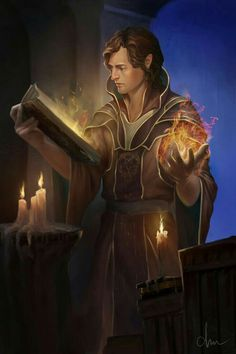

Explorador: Los bosques albergan criaturas astutas y feroces, como los sangrientos osos lechuza y las maliciosas bestias trémulas. Pero hay alguien más astuto y fuerte que esos monstruos: el explorador, un hábil cazador en ese terreno.
Guerrero: A esta clase pertenecen el caballero embarcado en una búsqueda, el señor feudal dedicado a la conquista, el campeón del rey, el infante de élite, el mercenario veterano y el rey bandido.
Mago: Unas cuantas palabras ininteligibles y una breve gesticulación bastan para obtener un poder mayor que el de los tajos de un hacha de batalla; al menos, cuando tales palabras y gestos procedan de un mago.